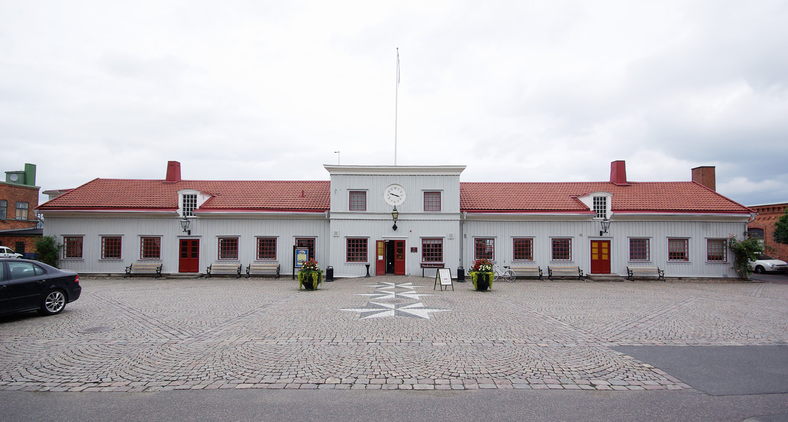

Jönköping is the tenth biggest city in Sweden housing over 100 000 inhabitants. This is a picrute of Munksjöbron which is located in the middle of the city
Tändsticksmuseet in Jönköping is and old matchmuseum from 1848. It was here that the match was first invented and is the cause for its global use today. Here you can visit and learn about the old machines and living conditions of the people who worked there.
Twice a year, Dreamhack the worlds biggest lan is hosted in Jönköping at the Elmia stadium. More than 50 000 people attend and over 17 000 computers are connected to the servers. Tournaments in e-sport and other competitions with big prizepools.